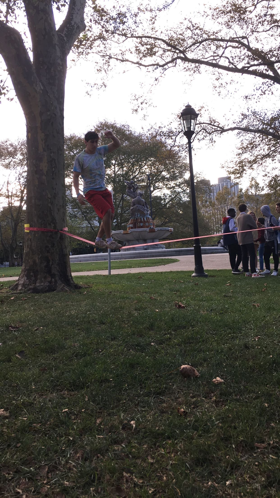
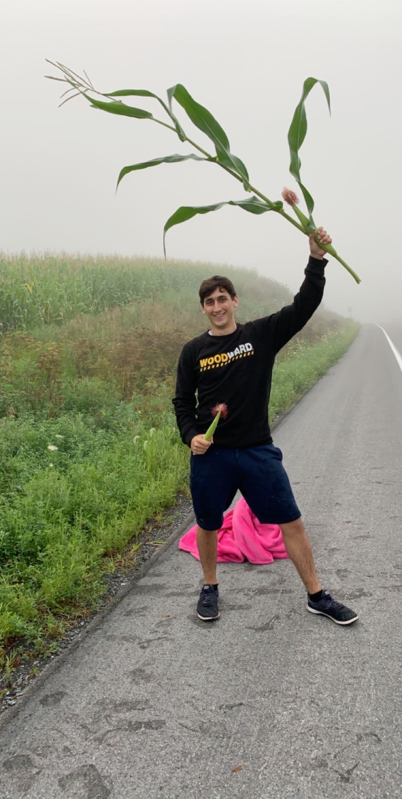
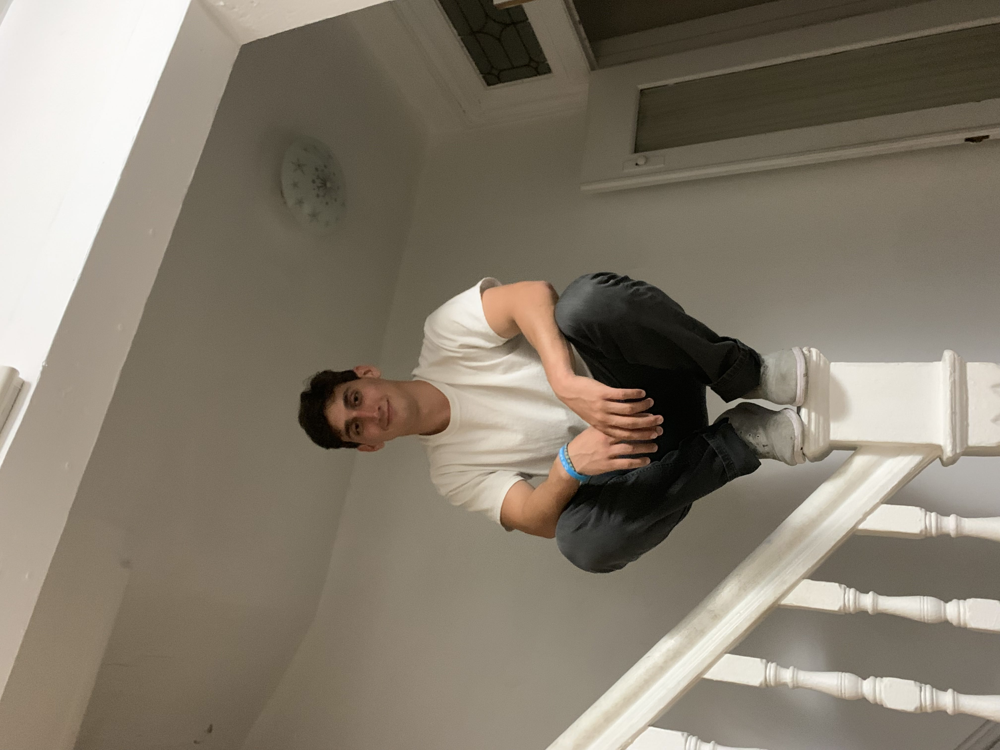
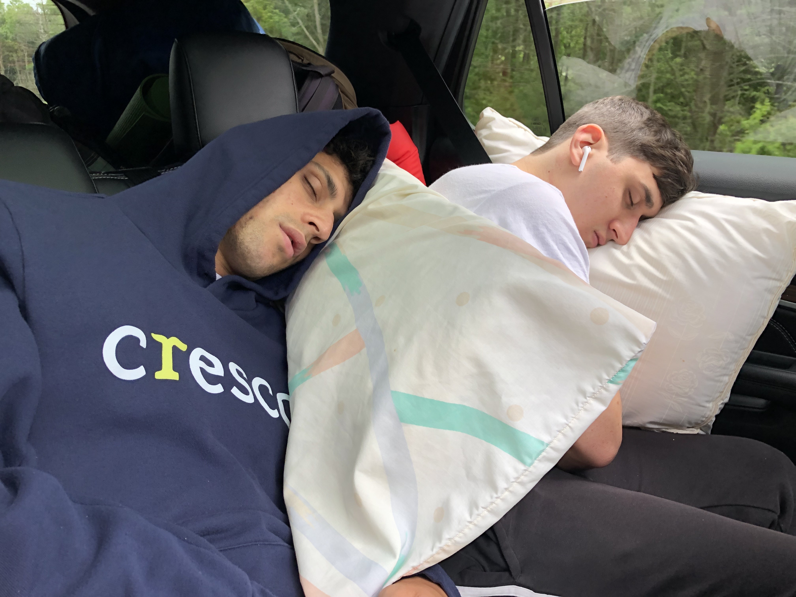
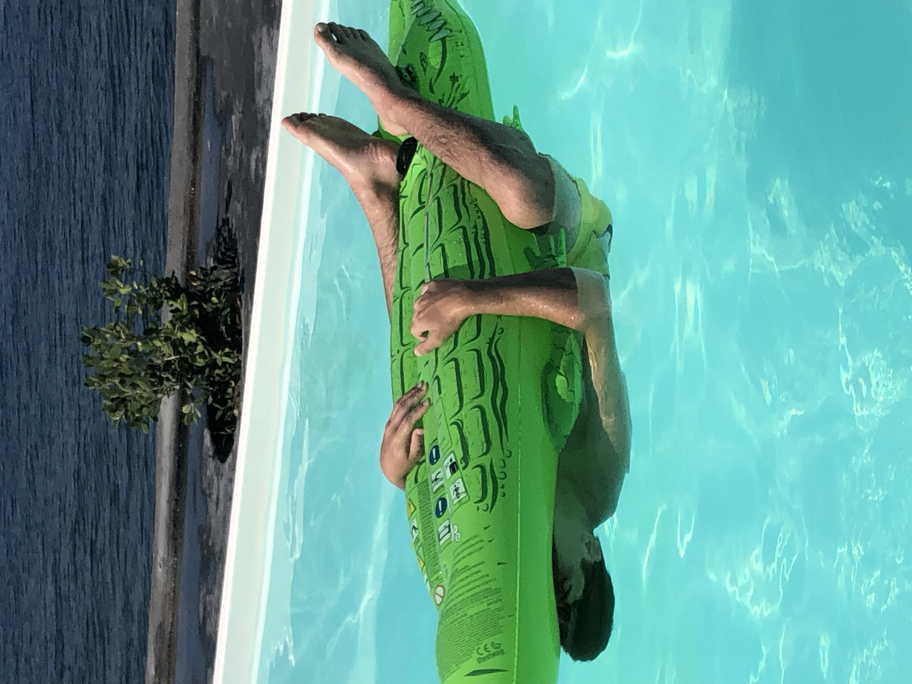
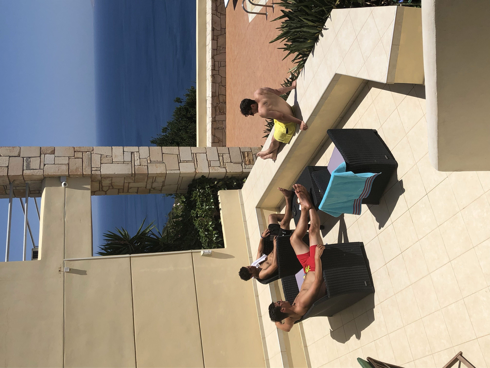

To me, the study of digital narrative allows one to become a modern day storyteller. Like the storytellers of old, it is your job to educate and entertain, but more importantly, it is your duty to pass on knowledge. In ancient times, these storytellers were limited to the regions they could physically travel to, as well as their mediums of conveying a story.
Nowadays, we are blessed with the Internet and Social Media, which allow our reach to be global and our mediums to be diverse. I have noticed how things such as music, movies and tv shows, books, and even platforms such as YouTube have influenced our collective culture to an insane degree throughout my life. Upon realizing that they are all different methods of telling a story, I became interested in pursuing that as a career.
Family and Home






It turns out that I barely have any pictures of my family, so I added different photos of myself. The first exception is of my younger brother, Max, and I passed out in a car on the way back from a camping trip. The second exception (the bottom right photo in the photo grid), features myself, my younger brother, and my older brother soaking up the sun on a nice day in Crete. My brothers and I are close; close in age, similar in appearance (so some people say), and good friends with each other.
Entertainment
Personally, I love media, specifically music and movies. Media is so powerful in it's ability to invoke empathy and create connections across wide groups of diverse people. It has the power to generate culture, which can be seen throughout different eras. A great example of that power is the Beatlemania that rocked the world in the 1960s, causing legitimate riots.
Community
Throughout my life I have had multiple communities; as a kid I had my family and friends from school, in high school I had my friends from gymnastics, at my favorite place in the world, Camp Woodward, I met talented people from all over the world, and at Pitt I have made friends who will last a lifetime.
School
I've never been a big fan of the structure of school. My favorite teachers have always been ones who have let me be as creative as I want, guiding me but not limiting me. I love learning, and many things I've heard in classes have blown my mind. But it seems that everytime I've ever expressed a true interest in something, you would have to try and stop me from learning everything I can about it on my own. This class seems to be exactly what I've been looking for at Pitt.